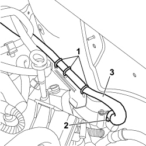

5020M24 AIR INTAKE SLEEVE FOR SUPPLEMENTARY INDEPENDENT HEATER RR
- Path
- Procedures > 50 AUXILIARY UNITS > 5020 HEATER > 5020M SUPPLEMENTARY INDEPENDENT HEATER > 5020M24 AIR INTAKE SLEEVE FOR SUPPLEMENTARY INDEPENDENT HEATER RR
- Kind
- repair procedure (removal / refitting; the operation number is the code)
- Applies to
- engines: 1.9 JTD 8v, 1.9 JTD 16v, 2.4 JTD 20v; all production periods
- Interactive page
- https://sloeber94.github.io/elrnDB-fCrm/en/#/194001931
Applies to: engines: 1.9 JTD 8v, 1.9 JTD 16v, 2.4 JTD 20v; all production periods
 Removing
Removing
 Refitting
Refitting- Turn the ignition key to the OFF position.
- Disconnect the negative battery terminal.
Description | Connector | |
|---|---|---|
BATTERY |
Op. 1016A10 SOUND-PROOFING COVER - R.R
1. Cut the hose securing bands and remove them.
2. Using the special pliers, remove the band securing the hose to the independent heater.
3. Detach the air intake hose from the additional heater and remove it from the vehicle.

Applies to: engines: 1.9 JTD 8v, 1.9 JTD 16v, 2.4 JTD 20v; all production periods
Refitting
Removing- Position the air intake hose and fit it on the independent heater and tighten the securing band.
- Renew the routing of the pipe and secure it using new bands.
Op. 1016A10 SOUND-PROOFING COVER - R.R
- Connect the negative battery terminal.
Description | Connector | |
|---|---|---|
BATTERY |